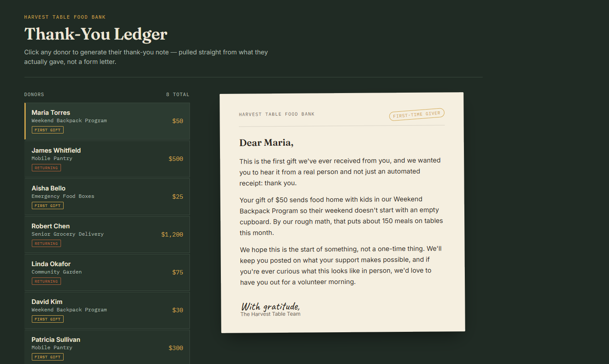
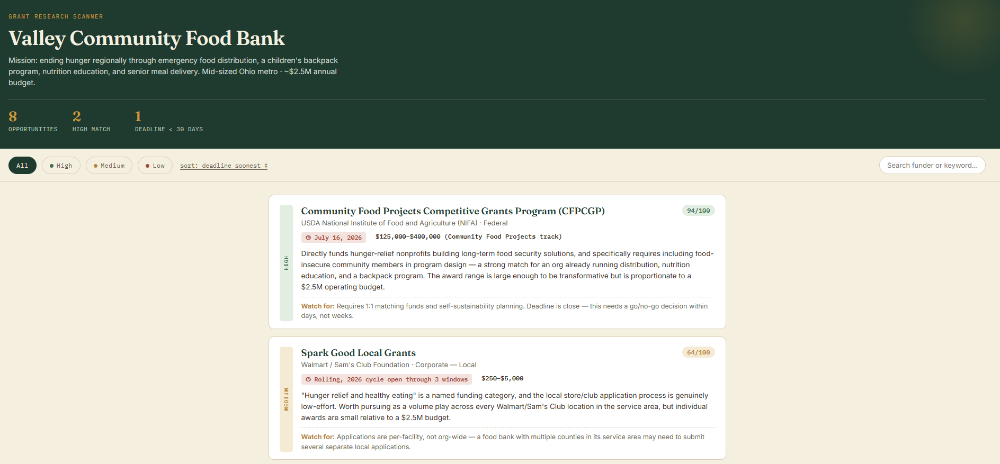
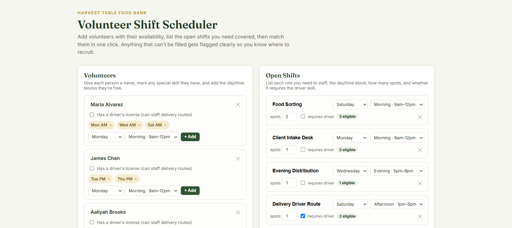
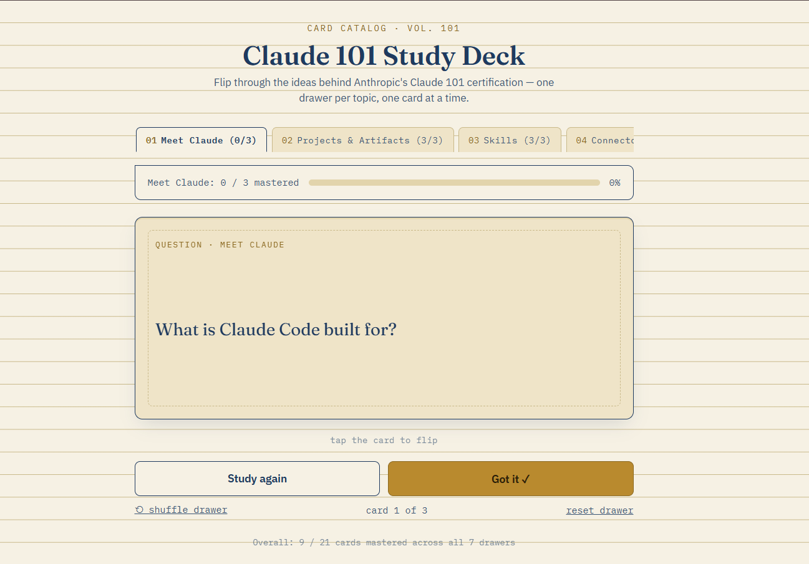

Associate of Science
Claude Corps Fellowship Applicant
I volunteer at my local food bank, and this past year I picked up a real skill: building things with Claude. Here are three small tools I made for the kind of day-to-day work food banks deal with, plus a bit about me.

About
I grew up never having to think about where my next meal was coming from. At some point I noticed that plenty of people my age don't get that, and it never sat right with me.
So I started volunteering at my local food bank. What surprised me was how much of the work is just logistics: matching volunteers to shifts, chasing grant deadlines, writing thank-you notes so they don't read like a form letter. Claude happens to be good at all three of those, which is the actual reason I built the projects below.
Skills
Featured Projects
Built with Claude for a hypothetical organization, "Harvest Table Food Bank." The data is made up, the tools are live.

Scores real-shaped grant opportunities against an org's mission, service area, budget, and deadlines, so staff aren't reading fifty listings to find the eight worth their time.


A flip-card study app built for the Claude101 Anthropic Certification Course, so course material can be reviewed and self-quizzed outside the lesson itself.
Resume
High school diploma, an Associate of Science from Houston Community College, and a year as an independent AI contractor for OpenHome.com — chatbot development, process consulting, research, and social media growth, using Claude for most of the actual work.
Get in touch about itContact
Open to hearing from anyone involved in the fellowship, or anyone who wants to talk about food security and what Claude can actually do for a small nonprofit.